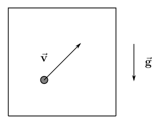
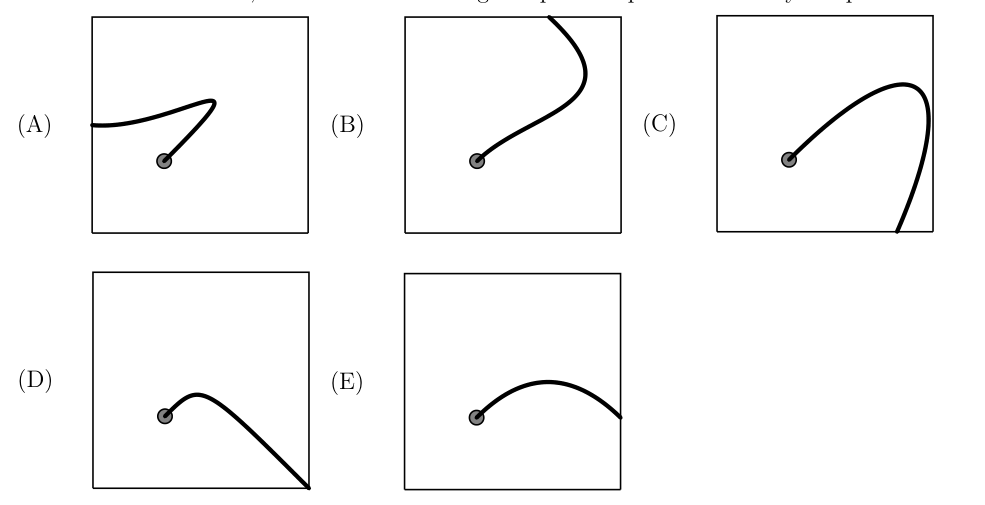
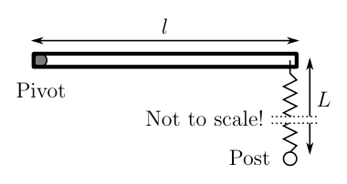
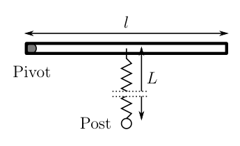
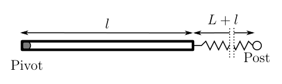
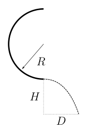
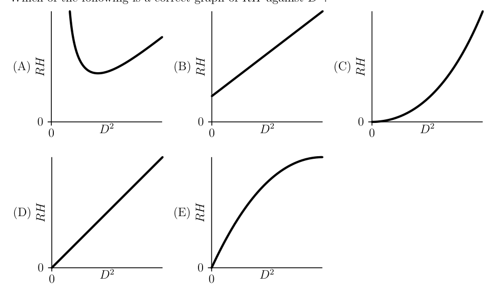
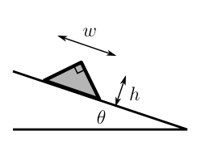

- A car drives anticlockwise (counterclockwise) around a flat, circular curve at constant speed, so that the left, front wheel traces out a circular path of radius . If the width of the car is , what is the ratio of the angular velocity about its axle of the left, front wheel to that of the right, front wheel, of the car as it moves through the curve? Assume the wheels roll without slipping.
- A. 0.331
- B. 0.630
- C. 0.708
- D. 0.815
- E. 0.847
Topic: Rotational Dynamics, Newtonian Mechanics Metodi: Kinematic Equations, Vector Decomposition, Torque & Angular Momentum Analysis Competenze: Mathematical Modeling, Physical Reasoning Objects: Wheel Fonte: Testo (PDF) — p.2
- Una macchina si muove in senso antiorario (in senso antiorario) attorno a una curva piatta e circolare a velocità costante, quindi che la ruota anteriore sinistra traccia un percorso circolare di raggio . Se la larghezza della macchina è , qual è il rapporto tra la velocità angolare intorno all’asse sinistra, ruota anteriore e quella di la ruota anteriore destra della macchina mentre si muove attraverso la curva? Supponiamo che le ruote ruotino senza
- Scorreva.
- A. 0.331
- B. 0.630
- C. 0.708
- D. 0.815
- E. 0.847
Topic: Rotational Dynamics, Newtonian Mechanics Metodi: Kinematic Equations, Vector Decomposition, Torque & Angular Momentum Analysis Competenze: Mathematical Modeling, Physical Reasoning Objects: Wheel Fonte: Testo (PDF) — p.2
- A 3.0 cm thick layer of oil with density is floating above water that has density . A solid cylinder is floating so that 1/3 is in the water, 1/3 is in the oil, and 1/3 is in the air. Additional oil is added until the cylinder is floating only in oil. What fraction of the cylinder is in the oil? Oil Layer Water Before After
- A. 3/5
- B. 3/4
- C. 2/3
- D. 8/9
- E. 4/5
Topic: Fluid Mechanics Metodi: Hydrostatic Equilibrium, Physical Modeling Competenze: Physical Reasoning, Mathematical Modeling Objects: Cylinder, Container Fonte: Testo (PDF) — p.2
- Un strato di olio di 3,0 cm di spessore con densità galleggia sopra l’acqua che ha densità . Un cilindro solido galleggia in modo che 1/3 sia nell’acqua, 1/3 nell’olio, e Il terzo è in aria. Si aggiunge olio aggiuntivo fino a quando il cilindro galleggia solo in olio. Che frazione di Il cilindro è nell’olio? Strato di olio Acqua Prima di Dopo
- A. 3/5
- B. 3/4
- C. 2/3
- D. 8/9
- E. 4/5
Topic: Fluid Mechanics Metodi: Hydrostatic Equilibrium, Physical Modeling Competenze: Physical Reasoning, Mathematical Modeling Objects: Cylinder, Container Fonte: Testo (PDF) — p.2
- An introductory physics student, elated by a first semester grade, celebrates by dropping a textbook from a balcony into a deep layer of soft snow which is 3.00 m below. Upon hitting the snow the book sinks a further 1.00 m into it before coming to a stop. The mass of the book is 5.0 kg. Assuming a constant retarding force, what is the force from the snow on the book?
- A. 85 N
- B. 100 N
- C. 120 N
- D. 150 N
- E. 200 N
Topic: Newtonian Mechanics, Conservation of Energy Metodi: Energy Conservation Method, Free-Body Diagram, Kinematic Equations Competenze: Physical Reasoning, Mathematical Modeling Objects: Block Fonte: Testo (PDF) — p.3
- Uno studente di fisica introduttiva, eccitato da una prima classe del semestre, celebra cadendo un libro di testo da un balcone in un profondo strato di neve morbida che è di 3,00 m di sotto. Quando colpisce la neve Il libro si affonda un altro 1,00 m in esso prima di fermarsi. La massa del libro è di 5,0 kg. Supponendo una forza di ritardo costante, quale è la forza della neve sul libro?
- A. 85 N
- B. 100 N
- C. 120 N
- D. 150 N
- E. 200 N
Topic: Newtonian Mechanics, Conservation of Energy Metodi: Energy Conservation Method, Free-Body Diagram, Kinematic Equations Competenze: Physical Reasoning, Mathematical Modeling Objects: Block Fonte: Testo (PDF) — p.3
- A small bead slides from rest along a wire that is shaped like a vertical uniform helix (spring). Which graph below shows the magnitude of the acceleration a as a function of time? acceleration a time t (A) 0 0 acceleration a time t (B) 0 0 acceleration a time t (C) 0 0 acceleration a time t (D) 0 0 acceleration a time t (E) 0 0 The following information applies to questions 5 and 6. Consider a particle in a box where the force of gravity is down as shown in the figure. The particle has an initial velocity as shown, and the box has a constant acceleration to the right.
Topic: Newtonian Mechanics Metodi: Free-Body Diagram, Vector Decomposition, Kinematic Equations Competenze: Physical Reasoning, Diagrammatic Reasoning Objects: Wire Fonte: Testo (PDF) — p.3
- Una piccola perla scivola dal riposo lungo un filo che ha la forma di un’elice uniforme verticale (sorgente). Quale grafico di seguito mostra la grandezza dell’accelerazione a come funzione del tempo? accelerazione a tempo t (A) 0 0 accelerazione a tempo t (B) 0 0 accelerazione a tempo t (C) 0 0 accelerazione a tempo t (D) 0 0 accelerazione a tempo t (E) 0 0 Le seguenti informazioni si applicano alle domande 5 e 6. Considerate una particella in una scatola dove la forza di gravità è ridotta come mostrato nella figura. La particella ha una velocità iniziale come mostrato, e la scatola ha un’accelerazione costante a destra.
Topic: Newtonian Mechanics Metodi: Free-Body Diagram, Vector Decomposition, Kinematic Equations Competenze: Physical Reasoning, Diagrammatic Reasoning Objects: Wire Fonte: Testo (PDF) — p.3
- In the frame of the box, which of the following is a possible path followed by the particle? (A) (B) (C) (D) (E)

particella in scatola con velocità e gravità
cinque percorsi possibili della particella (A-E)Topic: Newtonian Mechanics Metodi: Free-Body Diagram, Vector Decomposition, Physical Modeling Competenze: Physical Reasoning, Diagrammatic Reasoning Objects: — Fonte: Testo (PDF) — p.4
- Nella cornice della scatola, quale delle seguenti è un percorso possibile seguito dalla particella? (A) (B) (C) (D) (E)
- particelle in scatola con velocità e gravità *
*cinque percorsi possibili della particella (A-E) *
Topic: Newtonian Mechanics Metodi: Free-Body Diagram, Vector Decomposition, Physical Modeling Competenze: Physical Reasoning, Diagrammatic Reasoning Objects: — Fonte: Testo (PDF) — p.4
- If the magnitude of the acceleration of the box is chosen correctly, the launched particle will follow a path that returns to the point that it was launched. In the frame of the box, which path is followed by the particle? (A) (B) (C) (D) (E)
Topic: Newtonian Mechanics Metodi: Free-Body Diagram, Vector Decomposition, Physical Modeling Competenze: Physical Reasoning, Diagrammatic Reasoning Objects: — Fonte: Testo (PDF) — p.5
- Se la grandezza dell’accelerazione della scatola viene scelta correttamente, la particella lanciata seguirà Un percorso che torna al punto in cui è stato lanciato. Nel quadro della scatola, quale percorso è seguita dalla particella? (A) (B) (C) (D) (E)
Topic: Newtonian Mechanics Metodi: Free-Body Diagram, Vector Decomposition, Physical Modeling Competenze: Physical Reasoning, Diagrammatic Reasoning Objects: — Fonte: Testo (PDF) — p.5
- A mass on a frictionless table is attached to the midpoint of an originally unstretched spring fixed at the ends. If the mass is displaced a distance A parallel to the table surface but perpendicular to the spring, it exhibits oscillations. The period T of the oscillations
- A. does not depend on A.
- B. increases as A increases, approaching a fixed value.
- C. decreases as A increases, approaching a fixed value.
- D. is approximately constant for small values of A, then increases without bound.
- E. is approximately constant for small values of A, then decreases without bound.
Topic: Oscillations & Waves, Newtonian Mechanics Metodi: Simple Harmonic Motion Analysis, Hooke’s Law, Small-Angle Approximation Competenze: Physical Reasoning, Mathematical Modeling Objects: Spring Fonte: Testo (PDF) — p.5
- Una massa su un tavolo senza attrito è attaccata al punto medio di una molla fissata originariamente non allungata alle estremità. Se la massa è spostata a una distanza A parallela alla superficie della tavola ma perpendicolare alla primavera, mostra oscillazioni. Periodo T delle oscillazioni
- A. non dipende da A.
- B. aumenta con l’aumento di A, avvicinandosi a un valore fisso.
- C. diminuisce con l’aumento di A, avvicinandosi a un valore fisso.
- D. è approssimativamente costante per piccoli valori di A, quindi aumenta senza limite.
- E. è approssimativamente costante per i piccoli valori di A, quindi diminuisce senza limite.
Topic: Oscillations & Waves, Newtonian Mechanics Metodi: Simple Harmonic Motion Analysis, Hooke’s Law, Small-Angle Approximation Competenze: Physical Reasoning, Mathematical Modeling Objects: Spring Fonte: Testo (PDF) — p.5
- Kepler’s Laws state that I. the orbits of planets are elliptical with one focus at the sun, II. a line connecting the sun and a planet sweeps out equal areas in equal times, and III. the square the period of a planet’s orbit is proportional to the cube of its semimajor axis. Which of these laws would remain true if the force of gravity were proportional to rather than ?
- A. Only I.
- B. Only II.
- C. Only III.
- D. Both II and III.
- E. None of the above.
Topic: Gravitation Metodi: Kepler’s Laws, Newton’s Law of Gravitation, Conservation Laws Competenze: Physical Reasoning, Mathematical Modeling Objects: Planet, Star Fonte: Testo (PDF) — p.6
- Le leggi di Kepler affermano che I. le orbite dei pianeti sono ellittiche con un solo foco sul Sole, II. una linea che collega il sole e un pianeta che spazza fuori aree uguali in tempi uguali, e III. Il il quadrato il periodo di un pianetas orbita è proporzionale al cubo della sua semimajor
- L’asse. Qual è la legge che rimarrebbe vera se la forza di gravità fosse proporzionale a piuttosto che ?
- A. Solo I.
- B. Solo II.
- C. Solo III.
- D. Sia II che III.
- E. Nessuna delle seguenti.
Topic: Gravitation Metodi: Kepler’s Laws, Newton’s Law of Gravitation, Conservation Laws Competenze: Physical Reasoning, Mathematical Modeling Objects: Planet, Star Fonte: Testo (PDF) — p.6
- A small bead is placed on the top of a frictionless glass sphere of diameter D as shown. The bead is given a slight push and starts sliding down along the sphere. Find the speed v of the bead at the point at which the which the bead leaves the sphere. D
- A.
- B.
- C.
- D.
- E.
Topic: Newtonian Mechanics, Conservation of Energy Metodi: Energy Conservation Method, Free-Body Diagram, Kinematic Equations Competenze: Mathematical Modeling, Physical Reasoning Objects: Sphere Fonte: Testo (PDF) — p.6
- Una piccola perla viene collocata sulla parte superiore di una sfera di vetro senza attrito di diametro D come mostrato. La perla viene spinto leggermente e inizia a scivolare lungo la sfera. Trova la velocità v della perla a il punto in cui la perla lascia la sfera. D
- A.
- B.
- C.
- D.
- E.
Topic: Newtonian Mechanics, Conservation of Energy Metodi: Energy Conservation Method, Free-Body Diagram, Kinematic Equations Competenze: Mathematical Modeling, Physical Reasoning Objects: Sphere Fonte: Testo (PDF) — p.6
- Two blocks are suspended by two massless elastic strings to the ceiling as shown in the figure. The masses of the upper and lower block are and respectively. If the upper string is suddenly cut just above the top block what are the accelerations of the two blocks at the moment when the top block begins to fall?
- A. upper: ; lower: 0
- B. upper: ; lower:
- C. upper: ; lower:
- D. upper: ; lower: 0
- E. upper: ; lower:
Topic: Newtonian Mechanics Metodi: Free-Body Diagram, Hooke’s Law, Physical Modeling Competenze: Physical Reasoning, Diagrammatic Reasoning Objects: Block, Spring Fonte: Testo (PDF) — p.7
- Due blocchi sono sospesi con due stringhe elastiche senza massa al soffitto come mostrato nella figura. Le masse del blocco superiore e inferiore sono rispettivamente e . Se il la corda viene improvvisamente tagliata appena sopra il blocco superiore quali sono le accelerazioni dei due blocchi al Il momento in cui il blocco superiore inizia a cadere?
- A. superiore: ; inferiore: 0
- B. superiore: ; inferiore:
- C. superiore: ; inferiore:
- D. superiore: ; inferiore: 0
- E. superiore: ; inferiore:
Topic: Newtonian Mechanics Metodi: Free-Body Diagram, Hooke’s Law, Physical Modeling Competenze: Physical Reasoning, Diagrammatic Reasoning Objects: Block, Spring Fonte: Testo (PDF) — p.7
- The power output from a certain experimental car design to be shaped like a cube is proportional to the mass m of the car. The force of air friction on the car is proportional to , where v is the speed of the car and A the cross sectional area. On a level surface the car has a maximum speed . Assuming that all versions of this design have the same density, then which of the following is true?
- A.
- B.
- C.
- D.
- E.
Topic: Newtonian Mechanics Metodi: Dimensional Analysis, Physical Modeling, Free-Body Diagram Competenze: Mathematical Modeling, Estimation & Approximation Objects: — Fonte: Testo (PDF) — p.7
- La potenza prodotta da un determinato progetto di auto sperimentale che deve essere a forma di cubo è proporzionale alla massa m della macchina. La forza di attrito dell’aria sulla vettura è proporzionale a , dove v è la velocità della vettura e A la zona di sezione incrociata. Su una superficie piatta, l’auto ha una velocità massima . Supponendo che tutte le versioni di questo disegno abbiano la stessa densità, quale delle seguenti
- E’ vero?
- A.
- B.
- C.
- D.
- E.
Topic: Newtonian Mechanics Metodi: Dimensional Analysis, Physical Modeling, Free-Body Diagram Competenze: Mathematical Modeling, Estimation & Approximation Objects: — Fonte: Testo (PDF) — p.7
- A block floats partially submerged in a container of liquid. When the entire container is accelerated upward, which of the following happens? Assume that both the liquid and the block are incompressible.
- A. The block descends down lower into the liquid.
- B. The block ascends up higher in the liquid.
- C. The block does not ascend nor descend in the liquid.
- D. The answer depends on the direction of motion of the container.
- E. The answer depends on the rate of change of the acceleration
Topic: Fluid Mechanics Metodi: Hydrostatic Equilibrium, Physical Modeling Competenze: Physical Reasoning, Mathematical Modeling Objects: Block, Container Fonte: Testo (PDF) — p.7
- Un blocco galleggia in un contenitore di liquido. Quando l’intero contenitore è accelerato verso l’alto, quale delle seguenti cose accade? Supponiamo che sia il liquido che il blocco siano
- Impressibile.
- A. Il blocco scende più in basso nel liquido.
- B. Il blocco sale più in alto nel liquido.
- C. Il blocco non sale né scende nel liquido.
- D. La risposta dipende dalla direzione di movimento del contenitore.
- E. La risposta dipende dal tasso di variazione dell’accelerazione
Topic: Fluid Mechanics Metodi: Hydrostatic Equilibrium, Physical Modeling Competenze: Physical Reasoning, Mathematical Modeling Objects: Block, Container Fonte: Testo (PDF) — p.7
- An object of mass initially moving at speed collides with an originally stationary object of mass , where . The collision could be completely elastic, completely inelastic, or partially inelastic. After the collision the two objects move at speeds and . Assume that the collision is one dimensional, and that object one cannot pass through object two. After the collision, the speed ratio of object 2 is bounded by
- A.
- B.
- C.
- D.
- E. The following information applies to questions 14 and 15. A uniform rod of length l lies on a frictionless horizontal surface. One end of the rod is attached to a pivot. An un-stretched spring of length lies on the surface perpendicular to the rod; one end of the spring is attached to the movable end of the rod, and the other end is attached to a fixed post. When the rod is rotated slightly about the pivot, it oscillates at frequency f. l Pivot Post L Not to scale!
Topic: Conservation of Momentum, Newtonian Mechanics Metodi: Conservation of Momentum, Conservation of Energy, Impulse-Momentum Theorem Competenze: Mathematical Modeling, Physical Reasoning Objects: Rod, Spring Fonte: Testo (PDF) — p.8
- Un oggetto di massa inizialmente in movimento a velocità si schianta con un oggetto originariamente fermo di massa , dove . La collisione potrebbe essere completamente elastica, completamente inelastica, o parzialmente inelastica. Dopo la collisione i due oggetti si muovono a velocità e . Supponiamo che il La collisione è unidimensional, e quell’oggetto non può passare attraverso l’oggetto due. Dopo la collisione, il rapporto di velocità dell’oggetto 2 è limitato da:
- A.
- B.
- C.
- D.
- E. Le seguenti informazioni si applicano alle domande 14 e 15. Una barra uniforme di lunghezza l si trova su una superficie orizzontale senza attrito. Un’ estremità della canna è attaccata
- Un pivot. Una sorgente non allungata di lunghezza si trova sulla superficie perpendicolare alla canna; una estremità della molla è collegata all’estremità mobile della canna e l’altra è collegata all’estremità mobile della canna un posto fisso. Quando la canna è rotata leggermente intorno al pivot, oscilla a frequenza f. l Pivot Post L Non a scala!
Topic: Conservation of Momentum, Newtonian Mechanics Metodi: Conservation of Momentum, Conservation of Energy, Impulse-Momentum Theorem Competenze: Mathematical Modeling, Physical Reasoning Objects: Rod, Spring Fonte: Testo (PDF) — p.8
- The spring attachment is moved to the midpoint of the rod, and the post is moved so the spring remains unstretched and perpendicular to the rod. The system is again set into small oscillations. What is the new frequency of oscillation? l Pivot Post L
- A.
- B.
- C.
- D.
- E.

asta con molla perpendicolare e perno (setup)
asta con molla al punto medioTopic: Oscillations & Waves, Rotational Dynamics Metodi: Simple Harmonic Motion Analysis, Torque & Angular Momentum Analysis, Hooke’s Law Competenze: Mathematical Modeling, Physical Reasoning Objects: Rod, Spring Fonte: Testo (PDF) — p.9
- Il supporto di molla viene spostato al punto medio della canna, e il palo è spostato in modo che la molla rimane allontanato e perpendicolare alla canna. Il sistema è di nuovo impostato in piccole oscillazioni. Qual è la nuova frequenza di oscillazione? l Pivot Post L
- A.
- B.
- C.
- D.
- E.
*asta con molla perpendicolare e perno (impostazione) *
*asta con molla al punto medio *
Topic: Oscillations & Waves, Rotational Dynamics Metodi: Simple Harmonic Motion Analysis, Torque & Angular Momentum Analysis, Hooke’s Law Competenze: Mathematical Modeling, Physical Reasoning Objects: Rod, Spring Fonte: Testo (PDF) — p.9
- The spring attachment is moved back to the end of the rod; the post is moved so that it is in line with the rod and the pivot and the spring is unstretched. The post is then moved away from the pivot by an additional amount l. What is the new frequency of oscillation? l Pivot L + l Post
- A.
- B.
- C.
- D.
- E.

asta con molla allineata e pernoTopic: Oscillations & Waves, Rotational Dynamics Metodi: Simple Harmonic Motion Analysis, Torque & Angular Momentum Analysis, Hooke’s Law Competenze: Mathematical Modeling, Physical Reasoning Objects: Spring, Rod Fonte: Testo (PDF) — p.9
- Il supporto a molla viene spostato di nuovo alla fine della canna; il palo viene spostato in modo che sia in linea con la canna e il pivot e la sorgente non estesa. Il posto viene poi spostato lontano dal Pivot di un importo supplementare l. Qual è la nuova frequenza di oscillazione? l Pivot L + l Post
- A.
- B.
- C.
- D.
- E.
asta con molla allineata e perno
Topic: Oscillations & Waves, Rotational Dynamics Metodi: Simple Harmonic Motion Analysis, Torque & Angular Momentum Analysis, Hooke’s Law Competenze: Mathematical Modeling, Physical Reasoning Objects: Spring, Rod Fonte: Testo (PDF) — p.9
- A ball rolls from the back of a large truck traveling 10.0 m/s to the right. The ball is traveling horizontally at 8.0 m/s to the left relative to an observer in the truck. The ball lands on the roadway 1.25 m below its starting level. How far behind the truck does it land?
- A. 0.50 m
- B. 1.0 m
- C. 4.0 m
- D. 5.0 m
- E. 9.0 m
Topic: Newtonian Mechanics Metodi: Kinematic Equations, Vector Decomposition, Free-Body Diagram Competenze: Mathematical Modeling, Physical Reasoning Objects: Ball, Cart Fonte: Testo (PDF) — p.10
- Una palla ruota dalla parte posteriore di un grande camion che si muove a destra a 10,0 m/s. La palla sta viaggiando orizzontalmente a 8,0 m/s a sinistra rispetto ad un osservatore nel camion. La palla atterra sulla stradale a 1,25 m al di sotto del suo livello di partenza. Quanto lontano dietro il camion atterrà?
- A. 0.50 m
- B. 1.0 m
- C. 4.0 m
- D. 5.0 m
- E. 9.0 m
Topic: Newtonian Mechanics Metodi: Kinematic Equations, Vector Decomposition, Free-Body Diagram Competenze: Mathematical Modeling, Physical Reasoning Objects: Ball, Cart Fonte: Testo (PDF) — p.10
- As shown in the figure, a ping-pong ball with mass m with initial horizontal velocity v and angular velocity comes into contact with the ground. Friction is not negligible, so both the velocity and angular velocity of the ping-pong ball changes. What is the critical velocity such that the ping-pong will stop and remain stopped? Treat the ping-pong ball as a hollow sphere. v
- A.
- B.
- C.
- D.
- E.
Topic: Rotational Dynamics, Newtonian Mechanics Metodi: Torque & Angular Momentum Analysis, Free-Body Diagram, Conservation Laws Competenze: Mathematical Modeling, Physical Reasoning Objects: Ball Fonte: Testo (PDF) — p.10
- Come mostrato nella figura, una palla da ping-pong con massa m con velocità orizzontale iniziale v e angolare la velocità entra in contatto con il terreno. La frizione non è trascurabile, quindi sia la velocità che la velocità la velocità angolare della palla di ping-pong cambia. Qual è la velocità critica tale che la velocità critica Il ping-pong si fermerà e rimarrà fermo? Tratta la palla di ping-pong come una sfera vuota. v
- A.
- B.
- C.
- D.
- E.
Topic: Rotational Dynamics, Newtonian Mechanics Metodi: Torque & Angular Momentum Analysis, Free-Body Diagram, Conservation Laws Competenze: Mathematical Modeling, Physical Reasoning Objects: Ball Fonte: Testo (PDF) — p.10
- A spinning object begins from rest and accelerates to an angular velocity of rad/s with an angular acceleration of rad/s. It remains spinning at that constant angular velocity and then stops with an angular acceleration of the same magnitude as it previously accelerated. The object made a total of 3 complete rotations during the entire motion. How much time did the motion take?
- A. 75 s
- B. 80 s
- C. 85 s
- D. 90 s
- E. 95 s
Topic: Rotational Dynamics Metodi: Kinematic Equations, Torque & Angular Momentum Analysis Competenze: Mathematical Modeling, Physical Reasoning Objects: — Fonte: Testo (PDF) — p.10
- Un oggetto in rotazione inizia da un punto di riposo e si accelera a una velocità angolare di rad/s con un’accelerazione angolare di rad/s. Rimane a girare a quella velocità angolare costante e poi si ferma con un’accelerazione angolare della stessa magnitudo che ha precedentemente accelerato. L’oggetto ha fatto un totale di 3 rotazioni complete durante tutto il movimento. Quanto tempo ci è passato?
- La mozione?
- A. 75 s
- B. 80 s
- C. 85 s
- D. 90 s
- E. 95 s
Topic: Rotational Dynamics Metodi: Kinematic Equations, Torque & Angular Momentum Analysis Competenze: Mathematical Modeling, Physical Reasoning Objects: — Fonte: Testo (PDF) — p.10
- A semicircular wire of radius R is oriented vertically. A small bead is released from rest at the top of the wire, it slides without friction under the influence of gravity to the bottom, where is then leaves the wire horizontally and falls a distance H to the ground. The bead lands a horizontal distance D away from where it was launched. R D H Which of the following is a correct graph of RH against ? RH (A) 0 0 RH (B) 0 0 RH (C) 0 0 RH (D) 0 0 RH (E) 0 0

filo semicircolare verticale e traiettoria caduta
cinque grafici RH vs D² (A-E)Topic: Newtonian Mechanics, Conservation of Energy Metodi: Energy Conservation Method, Kinematic Equations, Graph Linearization Competenze: Mathematical Modeling, Diagrammatic Reasoning Objects: Wire Fonte: Testo (PDF) — p.11
- Un filo semicircolare di raggio R è orientato verticalmente. Una piccola perla viene rilasciata dal riposo in cima di un filo, si scivola senza attrito sotto l’influenza della gravità verso il fondo, dove è quindi lascia il filo orizzontalmente e cade a una distanza H dal suolo. La perla atterra’ orizzontale Distanza D lontano dal luogo di lancio. R D H Qual è il grafico corretto di RH rispetto a ? RH (A) 0 0 RH (B) 0 0 RH (C) 0 0 RH (D) 0 0 RH (E) 0 0
filo semicircolare verticale e traiettoria caduta
*cinque grafici RH vs D2 (A-E) *
Topic: Newtonian Mechanics, Conservation of Energy Metodi: Energy Conservation Method, Kinematic Equations, Graph Linearization Competenze: Mathematical Modeling, Diagrammatic Reasoning Objects: Wire Fonte: Testo (PDF) — p.11
- A uniform solid right prism whose cross section is an isosceles right triangle with height h and width is placed on an incline that has a variable angle with the horizontal . What is the minimum coefficient of static friction so that the prism topples before it begins sliding as is slowly increased from zero? h w
- A. 0.71
- B. 1.41
- C. 1.50
- D. 1.73
- E. 3.00 The following information applies to questions 21 and 22. A small ball of mass 3m is at rest on the ground. A second small ball of mass m is positioned above the ground by a vertical massless rod of length L that is also attached to the ball on the ground. The original orientation of the rod is directly vertical, and the top ball is given a small horizontal nudge. There is no friction; assume that everything happens in a single plane.

prisma triangolare su piano inclinatoTopic: Rigid Body Statics, Newtonian Mechanics Metodi: Free-Body Diagram, Torque & Angular Momentum Analysis, Vector Decomposition Competenze: Mathematical Modeling, Physical Reasoning, Diagrammatic Reasoning Objects: Inclined Plane Fonte: Testo (PDF) — p.12
- Un prisma rigido uniforme a destra la cui sezione trasversale è un triangolo retto a pari stelle con altezza h e larghezza è posizionata su una pendenza che ha un angolo variabile con la linea orizzontale . Che cos’è ? il coefficiente minimo di attrito statico in modo che il prisma si abbatta prima di iniziare a scivolare, come è
- Aumentato lentamente da zero? h w
- A. 0.71
- B. 1.41
- C. 1.50
- D. 1.73
- E. 3.00 Le seguenti informazioni si applicano alle domande 21 e 22. Una piccola palla di massa di 3 metri è in riposo sul terreno. Si posiziona una seconda piccola palla di massa m sopra il terreno con una barra verticale senza massa di lunghezza L che è anch’essa attaccata alla palla sulla
- A terra. L’orientamento originale della canna è direttamente verticale, e la palla superiore è data una piccola spinta orizzontale. Non c’è attrito; supponiamo che tutto accada in un unico piano.
*prisma triangolare su piano inclinato *
Topic: Rigid Body Statics, Newtonian Mechanics Metodi: Free-Body Diagram, Torque & Angular Momentum Analysis, Vector Decomposition Competenze: Mathematical Modeling, Physical Reasoning, Diagrammatic Reasoning Objects: Inclined Plane Fonte: Testo (PDF) — p.12
- Determine the horizontal displacement x of the second ball just before it hits the ground.
- A.
- B.
- C.
- D.
- E.
Topic: Newtonian Mechanics, Conservation of Momentum Metodi: Conservation of Momentum, Free-Body Diagram, Kinematic Equations Competenze: Mathematical Modeling, Physical Reasoning Objects: Ball, Rod Fonte: Testo (PDF) — p.12
- Determina il spostamento orizzontale x della seconda palla poco prima che colpisca il terreno.
- A.
- B.
- C.
- D.
- E.
Topic: Newtonian Mechanics, Conservation of Momentum Metodi: Conservation of Momentum, Free-Body Diagram, Kinematic Equations Competenze: Mathematical Modeling, Physical Reasoning Objects: Ball, Rod Fonte: Testo (PDF) — p.12
- Determine the speed v of the second (originally top) ball just before it hits the ground.
- A.
- B.
- C.
- D.
- E.
Topic: Newtonian Mechanics, Conservation of Energy Metodi: Energy Conservation Method, Conservation of Momentum, Kinematic Equations Competenze: Mathematical Modeling, Physical Reasoning Objects: Ball, Rod Fonte: Testo (PDF) — p.12
- Determinare la velocità v della seconda palla (in origine superiore) poco prima che colpisca il terreno.
- A.
- B.
- C.
- D.
- E.
Topic: Newtonian Mechanics, Conservation of Energy Metodi: Energy Conservation Method, Conservation of Momentum, Kinematic Equations Competenze: Mathematical Modeling, Physical Reasoning Objects: Ball, Rod Fonte: Testo (PDF) — p.12
- A uniform thin circular rubber band of mass M and spring constant k has an original radius R. Now it is tossed into the air. Assume it remains circular when stabilized in air and rotates at angular speed about its center uniformly. Which of the following gives the new radius of the rubber band?
- A.
- B.
- C.
- D.
- E.
Topic: Rotational Dynamics, Elasticity & Materials Metodi: Free-Body Diagram, Torque & Angular Momentum Analysis, Hooke’s Law Competenze: Mathematical Modeling, Physical Reasoning Objects: — Fonte: Testo (PDF) — p.13
- Una banda di gomma circolare sottile uniforme di massa M e costante di molla k ha un raggio originale R. Ora viene lanciato in aria. Supponiamo che rimanga circolare quando si stabilizza nell’aria e ruota a velocità angolare intorno al suo centro in modo uniforme. Qual è il nuovo raggio di
- Una gomma?
- A.
- B.
- C.
- D.
- E.
Topic: Rotational Dynamics, Elasticity & Materials Metodi: Free-Body Diagram, Torque & Angular Momentum Analysis, Hooke’s Law Competenze: Mathematical Modeling, Physical Reasoning Objects: — Fonte: Testo (PDF) — p.13
- The moment of inertia of a uniform equilateral triangle with mass m and side length a about an axis through one of its sides and parallel to that side is . What is the moment of inertia of a uniform regular hexagon of mass m and side length a about an axis through two opposite vertices?
- A.
- B.
- C.
- D.
- E.
Topic: Rotational Dynamics Metodi: Torque & Angular Momentum Analysis, Symmetry Argument, Physical Modeling Competenze: Mathematical Modeling, Physical Reasoning Objects: — Fonte: Testo (PDF) — p.13
- Il momento di inerzia di un triangolo equilaterale uniforme con massa m e lunghezza laterale a circa a L’asse attraverso uno dei suoi lati e parallelo a tale lato è . Qual è il momento di inerzia di un esagono regolare uniforme di massa m e lunghezza laterale a circa un asse attraverso due opposti
- Vertici?
- A.
- B.
- C.
- D.
- E.
Topic: Rotational Dynamics Metodi: Torque & Angular Momentum Analysis, Symmetry Argument, Physical Modeling Competenze: Mathematical Modeling, Physical Reasoning Objects: — Fonte: Testo (PDF) — p.13
- Three students make measurements of the length of a 1.50 meter rod. Each student reports an uncertainty estimate representing an independent random error applicable to the measurement. Alice: A single measurement using a 2.0 meter long tape measure, to within mm. Bob: Two measurements using a wooden meter stick, each to within mm, which he adds together. Christina: Two measurements using a machinist’s meter ruler, each to within mm, which she adds together. The students’ teacher prefers measurements that are likely to have less error. Which is the correct order of preference?
- A. Christina’s is preferable to Alice’s, which is preferable to Bob’s
- B. Alice’s is preferable to Christina’s, which is preferable to Bob’s
- C. Alice’s and Christina’s are equally preferable; both are preferable to Bob’s
- D. Christina’s is preferable to both Alice’s and to Bob’s, which are equally preferable
- E. Alice’s is preferable to Bob’s and Christina’s, which are equally preferable
Topic: Order-of-Magnitude Estimation Metodi: Error Propagation, Experimental Data Analysis Competenze: Error Propagation, Measurement & Instrumentation, Significant Figures Objects: Rod Fonte: Testo (PDF) — p.13
- Tre studenti misurano la lunghezza di un bastone di 1,50 metri. Ogni studente riferisce un stima di incertezza che rappresenta un errore casuale indipendente applicabile alla misurazione. Alice: misurazione singola con nastro di misura lungo 2,0 metri, entro mm. Bob: due misure con un bastone di misura in legno, ciascuna entro mm, che aggiunge
- insieme. Christina: Due misure con un reggente di misura del macchinista, ciascuna entro mm, che ha
- Si aggiungono. Gli studenti l’insegnante preferiscono le misurazioni che hanno probabilità di avere meno errori. Che è il giusto ordine di preferenza?
- A. Christinas è preferibile a Alices, che è preferibile a Bobs
- B. Alices è preferibile a Christinas, che è preferibile a Bobs
- C. Alices e Christinas sono ugualmente preferiti; entrambi sono preferiti ai Bobs
- D. Christinas è preferita sia alle Alices che alle Bobs, che sono ugualmente preferiti
- E. Alices è preferibile ai Bobs e Christinas, che sono ugualmente preferibili
Topic: Order-of-Magnitude Estimation Metodi: Error Propagation, Experimental Data Analysis Competenze: Error Propagation, Measurement & Instrumentation, Significant Figures Objects: Rod Fonte: Testo (PDF) — p.13